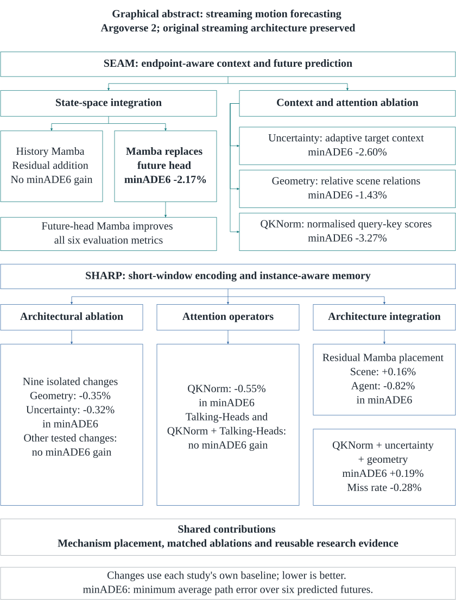
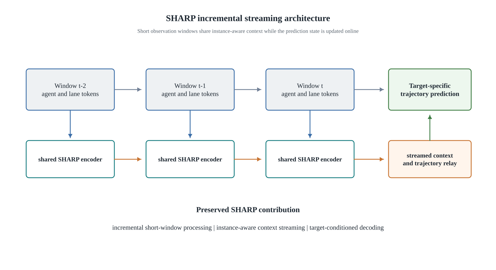

lower selected minADE6
14.84% more training time
Research / M.Sc. dissertation / University of Surrey
Uncertainty-Aware Attention, Geometry and State-Space Modelling for Streaming Motion Forecasting
Better predictions depend on where a model puts its attention, geometry and memory. I investigate how these mechanisms interact as autonomous systems update their predictions over time.
First supervisorProfessor Saber Fallahs.fallah@surrey.ac.uk
Second supervisorProfessor Kevin WellsUniversity of Surrey profile
01 / The research question
What should a streaming predictor remember?
A road user can turn, slow down or change direction as new observations arrive. A streaming forecasting system must update several plausible futures without discarding useful context or treating stale predictions as certainty.
My dissertation studies SEAM, with endpoint-aware context and future prediction, and SHARP, with short observation windows and instance-aware memory. I implemented and evaluated targeted changes while preserving their core streaming pathways.
The contribution is a controlled map of which mechanism helps, at which location, under which protocol. Five study families on Argoverse 2 connect 25 indexed model records to configurations, selected checkpoints, evaluation outputs and training-time evidence.
lower selected minADE6
4.1% more training time
higher minADE6
Four secondary metrics improved
Each change is relative to its own study control. These are single-seed observations, not a shared leaderboard or a claim of statistical significance.
View the dissertation’s graphical abstract

02 / Methods & implementation
Four mechanisms. Two streaming architectures.
Each intervention changes a specific part of the information flow. Separate controls distinguish the effect of a component from its placement and from its interaction with other components.
Uncertainty-aware context
Previous modal probabilities and entropy condition the context used for a target prediction. In SEAM, the continuous feature gain is trainable, but the hard selection boundary remains at 30 m because its Boolean mask has no ordinary data gradient. This is evidence for confidence-conditioned gain, not learned radius expansion.
Relative geometry
Pairwise displacement, distance and heading relationships contribute a learned bias to scene-attention scores. This adds explicit physical relationships to how existing agents and lane tokens interact.
Query–Key Normalisation
QKNorm normalises queries and keys within each head and learns their similarity scale. The study preserves values, masks and attention topology, separating relevance-score normalisation from Talking-Heads cross-head mixing.
Mamba state-space placement
Selective recurrence processes ordered agent histories or mode-specific future coordinates. The experiments compare residual additions with replacement at specific locations: SEAM benefits from future-head recurrence, while SHARP favours a residual agent-history path on its selected primary metric.
SEAM
Two families examine state-space integration and independent context/attention interventions. Endpoint-conditioned retrieval and trajectory relay remain part of the architecture.
Explore the intervention diagramSHARP
Architectural screening, attention operators and integration studies examine short-window encoding and instance-aware memory. Placement and composition are evaluated separately.
Explore the architecture diagram
03 / Interactive results
Explore the evidence, one study at a time.
minADE6 measures the average trajectory error of the best of six predicted futures, in metres. Lower is better. Choose a comparison to inspect its selected validation scores and recorded training duration.
20 epochs · 3 GPUs · global batch 48 · seed 2333
SEAM: context and attention
QKNorm gives the largest selected-error reduction in this study. Confidence-conditioned context offers a smaller gain with a much smaller increase in recorded training time.
| Configuration | minADE6 (m) | Error change | Training (h) |
|---|---|---|---|
| Baseline | 0.727668 | Reference | 15.61 |
| Uncertainty-aware context | 0.708755 | -2.60% | 15.67 |
| Relative geometry | 0.717261 | -1.43% | 15.75 |
| QKNorm | 0.703845 | -3.27% | 17.93 |
Geometry selects epoch 18 (0.717261); its final epoch-19 minADE6 is 0.718735. The other selected epochs are 19. These selection scores must not be substituted into a different checkpoint’s full metric vector.
Code & retained evidence · Dissertation Tables 4.4–4.5
80 epochs · 2 GPUs · global batch 32 · seed 2333
SEAM: where should Mamba go?
Replacing the future-coordinate head with Mamba reduces selected minADE6 by 2.17%. All six common final-epoch metrics improve. Adding Mamba to agent history gives a mixed result.
| Configuration | minADE6 (m) | Error change | Training (h) |
|---|---|---|---|
| Baseline | 0.662859 | Reference | 70.52 |
| Agent-history Mamba | 0.664814 | +0.29% | 74.97 |
| Future-head Mamba | 0.648480 | -2.17% | 73.38 |
The table shows selected minADE6. Baseline and history select epoch 77; future-head Mamba selects epoch 79. The dissertation’s common six-metric vectors come from final epoch 79. Training durations are rounded to minutes.
Code & retained evidence · Dissertation Tables 4.2–4.3
80 epochs · 3 GPUs · global batch 24 · seed 2333
SHARP: attention operators
QKNorm lowers selected minADE6 by 0.55%. Talking-Heads and the combined operator do not improve this primary metric; the combined operator’s recorded training duration is about double the baseline.
| Configuration | minADE6 (m) | Error change | Training (h) |
|---|---|---|---|
| Standard attention (MHA) | 0.673460 | Reference | 99.65 |
| QKNorm | 0.669777 | -0.55% | 118.68 |
| Talking-Heads | 0.674991 | +0.23% | 118.12 |
| QKNorm + Talking-Heads | 0.674492 | +0.15% | 199.90 |
MHA selects epoch 66, QKNorm 65 and both Talking-Heads variants 71. The MHA secondary vector is from final epoch 79. The combined operator also used a smaller microbatch with gradient accumulation; this affects execution and normalisation comparability.
Code & retained evidence · Dissertation Tables 4.9–4.10
20 epochs · 4 GPUs · global batch 32 · 13 warm-up epochs
SHARP: nine isolated architectural changes
Relative geometry and uncertainty-aware context improve the primary selection metric. The other seven changes do not. This short-budget screen identifies candidates for follow-up, rather than a ranking of converged models.
| Configuration | minADE6 (m) | Error change | Training (h) |
|---|---|---|---|
| Baseline | 0.752339 | Reference | 35.22 |
| Memory gate | 0.755349 | +0.40% | 33.17 |
| Cross-window consistency | 0.776207 | +3.17% | 28.78 |
| Learned temporal pooling | 0.757637 | +0.70% | 34.53 |
| Uncertainty-aware context | 0.749961 | -0.32% | 30.48 |
| Relative geometry | 0.749679 | -0.35% | 38.43 |
| Kinematic stem | 0.785164 | +4.36% | 37.55 |
| Endpoint refinement | 0.755898 | +0.47% | 37.88 |
| Lane topology | 0.754238 | +0.25% | 37.75 |
| Temporal Mamba replacement | 0.780190 | +3.70% | 46.15 |
All variants use seed 2333. Thirteen of the twenty epochs are warm-up. Selected scores and historical secondary metric summaries do not establish a common reevaluation of every selected checkpoint.
Code & retained evidence · Dissertation Tables 4.7–4.8
80 epochs · 4 GPUs · global batch 32
SHARP: sequence placement matters
Moving residual recurrence from scene tokens to chronological agent history lowers selected minADE6 by 0.97% relative to scene-token Mamba. These results make placement an important part of the architectural choice.
| Configuration | minADE6 (m) | Error change | Training (h) |
|---|---|---|---|
| Scene-token Mamba | 0.680362 | Reference | 129.28 |
| Temporal-agent Mamba | 0.673736 | -0.97% | 160.33 |
The separate local baseline is 0.679282, giving a 0.82% reduction for agent-history Mamba in the dissertation comparison. Here the relative-change chart uses scene-token Mamba as the placement comparator. Agent-history selected minADE6 differs from its rounded later-epoch full vector; training durations are approximate.
Code & retained evidence · Dissertation Tables 4.11–4.12
80 epochs · 4 training GPUs · global batch 32 · selected checkpoints reevaluated on 1 GPU
SHARP: useful parts do not guarantee a better whole
Combining QKNorm, uncertainty-aware context and geometry slightly increases minADE6 by 0.19%, while improving four secondary metrics. Training takes 20.83% longer despite adding only 621 parameters.
| Configuration | minADE6 (m) | Error change | Training (h) |
|---|---|---|---|
| Baseline | 0.679282 | Reference | 125.70 |
| QKNorm + uncertainty + geometry | 0.680589 | +0.19% | 151.89 |
Baseline selects epoch 78 and the combined model epoch 79. Both are independently evaluated with batch 32 on the same AV2 validation split. Miss rate decreases from 0.155955 to 0.155515; the result is mixed, with no primary-metric improvement. Training durations exclude the separate final checkpoint evaluation.
Code & retained evidence · Dissertation Tables 4.13–4.14
How to interpret these comparisons
Training budgets, batch sizes and hardware differ between study families. Compare configurations within a panel. Timing records include the study’s training, validation and execution overhead; they do not measure inference latency.
The primary score is checkpoint-selection minADE6. Some historical full vectors come from a different epoch. Those vectors are not mixed into the selection scores shown here. Percentages in this explorer are calculated from the displayed six-decimal scores; the dissertation retains full-precision values.
04 / What the experiments show
Placement and interaction shape the outcome.
Recurrence needs the right sequence
SEAM’s future-head replacement improves all six final-epoch metrics, while history addition gives a mixed vector. SHARP’s ordered-history residual path outperforms scene-token placement on selected minADE6. Neither result supports replacing attention everywhere.
Accuracy and cost are separate questions
SEAM uncertainty-aware context reduces selected error by 2.60% with a 0.39% increase in recorded training time. QKNorm reaches a larger error reduction but costs 14.84% more time in that study. Parameter count alone does not explain execution cost.
Independent gains are not additive
SHARP’s combined QKNorm, uncertainty and geometry model improves miss rate, Brier-minFDE6 and both endpoint metrics, yet slightly worsens both ADE measures. Joint evaluation is essential before claiming a better overall predictor.
Evidence should remain inspectable
The contribution includes implementation packages, retained configuration and checkpoint records, metric comparisons, execution timings and original figures. Each result keeps its own baseline and evaluation context.
05 / Scope & next steps
Promising choices, with precise boundaries.
These experiments evaluate open-loop motion forecasting on Argoverse 2. Single-seed outcomes identify configurations worth confirming; they do not establish universal rankings, calibrated confidence, on-vehicle latency or closed-loop safety.
Reproduction and selection
The local SHARP baseline reaches selected minADE6 0.679282, compared with 0.639000 in the article. Architectural changes are compared with the local control. Validation supports both candidate selection and checkpoint selection, so further seeds and paired scenario-level bootstrap intervals are needed for stronger claims.
What remains to be evaluated
The repository includes further combined extensions, but their gains cannot be inferred from the completed ablations. No unevaluated configuration is included as a result here. DeMo is a literature precedent in the dissertation, not a matched experimental control.
Next research directions
Repeat the strongest candidates across seeds, evaluate selected checkpoints consistently, isolate mechanism interactions in a factorial study, and test persistent state across updates. Follow-on work can assess confidence calibration, trajectory diversity, temporal consistency, planning behaviour and inference latency.
06 / Read, inspect & reproduce
From the dissertation to the original evidence.
Full dissertationMethods, 26 tables, 23 numbered figures and a reproducibility appendix.Read PDF
Research repositoryStudy packages, implementations, configurations and retained results.Explore GitHub
Results and comparison tablesWithin-study summaries with source paths and checkpoint conventions.Inspect the results
Reproduction guideData access, execution requirements and evidence boundaries.Read the guide
View the complete research figure gallery · Download dissertation
Interested in motion forecasting, robotics or a research collaboration? Get in touch.